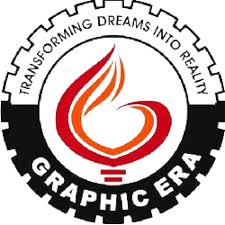

DEPARTMENT FACILITIES
- LIBRARY
- LABORATORY
- CLASSROOMS
- SPORTS COMPLEX
- CAFETERIA
SEMESTER-WISE-SUBJECTS
- FIRST SEMESTER
- Mathematics I
- Physics I
- Introduction to Programming
- English Communication
- SECOND SEMESTER
- Chemistry
- Mathematics II
- Digital Logic Design
- Environmental Science
COURSE DETAILS
- Course Name:
- Bachelor of Technology in Computer Science
- Duration:
- 4 Years (8 Semesters)
- Eligibility:
- 10+2 with Physics, Chemistry, and Mathematics
SUBJECT WIT UNITS
The following table lists the subjects along with their respective units for the B.Tech Computer Science program:
Subject alond with there unit:
-
Data Structures
- Unit 1: Introduction to Data Structures
-
Definition and importance of data structures, Types of data
structures: linear and non-linear, Abstract Data Types (ADTs).
- Unit 2: Arrays and Linked Lists
-
Arrays: Definition, types, operations, Advantages and
disadvantages. Linked Lists: Singly linked list, doubly linked
list, circular linked list, operations.
-
Artificial Intelligence
- Unit 1: Introduction to Artificial Intelligence
-
Definition and scope of AI, History and evolution of AI,
Applications of AI in various fields.
- Unit 2: Search Algorithms
-
Uninformed search strategies: Breadth-first search, Depth-first
search. Informed search strategies: A* algorithm, Greedy best-first
search.